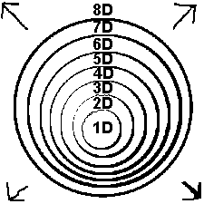
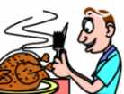

| Ethics Dictionary | Conditions Formulas | PTS Glossary | FAQs |
|
|
| Ethics Dictionary | Conditions Formulas | PTS Glossary | FAQs | |
Ethics Tools
Note: The Ethics Conditions and their Formulas are referred to repeatedly in this chapter. For full understanding: read this chapter, study the Conditions Formulas. Then study Ethics Tools again.
What sets R. Hubbard's personal Ethics system apart from traditional systems, such as law enforcement, enforcement of rules and regulations by a parent, teacher or boss, are the very basic concepts it is built on. On the surface it may not seem that different from for instance a teacher's attempts to uphold discipline and civilized behavior in a classroom or a parent straightening out a child. But there are principal differences that get fully evident in the so-called lower Conditions.
R. Hubbard's Ethics system is based on a refinement of the definition of Ethics itself and on the re-statement of Man's basic nature as being basically good. Both statements are closely related to SURVIVAL. Survival is seen as the basic dynamic principle of existence. All life impulses, be it in humans, animals or plants, have this in common: they have as their goal SURVIVAL. Primarily for the organism or body but it reaches higher echelons. Survival is not only a tooth and claw activity, where the individual is facing a hostile world, but is defined as any activity that helps the eight Dynamics of the individual. In animals, and even in plants, we can observe at least the first four Dynamics at work. An animal or plant seek to survive as an individual organism under the most trying circumstances. They have ways to protect themselves and they have ways of collecting food (1st Dyn). They have means of procreation and they care for their young (2nd Dyn). They bond together in groups of their own kind (3rd Dyn). They seek by many means to survive as a species (4th Dyn).
 |
The Dynamics are well illustrated as concentric |
The formulation of survival as the dynamic principle, the mapping of the individual's urges to survive along the eight Dynamics and the statement of "Man is basically good" are at the core of what makes it a new and refreshing approach to the very old problems of Ethics. Add to this that we consider an individual to basically be a spiritual being and having a free will and not just being some sort of survival machine. In other words, the individual can make his own right choices - or wrong choices for that matter - independent of genes, environment, public opinion, group pressure, etc. This may be different from what psychology, biology, and medicine try to teach. But they concentrate their research on physical causes. They discard any evidence that don't fit their equations and methods, thus overlooking the fact that a person is basically a spiritual being. In other words they exclude the observer and control point of events - which oddly enough include themselves.
 |
Man is not just some sort of survival |
The tools an Ethics Officer has to his
disposition are the PTS technology, the Overt/Withholds
data, including confessional auditing. The
Ethics Conditions is another tool. We cover especially the Ethics Conditions here. In
addition to this there are various other tools, some of them useful in handling
pc's. This section seeks to give a short overview of these tools we find relevant to the subject of
The Road to Clear.
What We Don't Cover
We do not cover what R. Hubbard
calls Ethics as a justice system defined and outlined by strict justice codes. Here
we are back to the traditional schoolmaster approach with some additions.
Additions include the so-called SP declare, where
dissidents risk to be labeled as 'SPs' and ex-communicated. This has repeatedly
been seen to go into utter intolerance and witch hunting. Ethics is Ethics as defined here
and in the dictionary. That is also how it was defined in
R. Hubbard's early writings and Axioms. It has to do with long range survival - not politics nor the Spanish Inquisition. What seems to be
wrong with "ethics" used as a justice system is, that it is very poorly codified
and totally open to misuse by those in power. When this happens it has nothing to do with self-improvement or making a pc ready
or acceptable for auditing. "Ethics" as a justice system under the
Codes seems in many parts to be
inspired by military law and boot-camp discipline and R. Hubbard's time in the US Navy during World War
Two.
If you really need such a body of laws and codes in a service organization the very first thing you have to ensure is to separate the courts from the executive branch. The system itself must be safeguarded against being used as simply a whip. Justice is reduced to a tool management uses to force their commands or ill temper upon juniors stripped of legal rights. That, almost by definition, is injustice. The separation between management and courts has not been done. This justice system isn't safe. If it were properly codified and reformed it could possibly work as a justice system. To us it just seems to try to over-administer a relative obvious task of delivering a service to individuals. It isn't - as R. Hubbard puts it - that "Man can't be trusted with Justice", meaning aberrated people will instantly use it in a selfish way to forward their own interests and convictions. This may be a correct observation but does not contain any solution. It is, that an executive branch should never be trusted with justice. If you need such a system it has to be designed to withstand any abuse and take-over attempts. That subject already exists. It is called Constitutional Law and is well researched and taught in universities. The Constitution of the United States has the best solution ever put to the test of reality.
What we cover here is then: Ethics as Ethics, not "ethics" as a formal justice- or law enforcement system. Ethics is a personal thing and allowing the individual to take a good look at his situation and allowing him to determine what is the right thing to do when looking at the bigger picture: the persons, groups, activities and other Dynamics involved - and his own role in it all.
The Conditions
R. Hubbard's concept of the Conditions was first presented to students in
May 1965 in a lecture called "The Five Conditions". It was presented
as a management system of how you could grow a company or activity. It could
also be applied by individuals as to bring about more personal wealth, influence
and status. By following certain rules, depending on the situation, the company
(or individual) would grow its income, influence and market share. The different
circumstances that characterized a certain type of situation was called a
Condition. The original five Conditions were: Danger, Emergency, Normal
Operation, Affluence and Power.
A Condition is formally defined as an operating state. It's the circumstances a person or group/company is in in relationship to others or anything on the Dynamics. There is a formula connected with each Condition which gives a general outline of how to handle the situation and improve ones lot. These Conditions can be applied on a personal level. That is the use we emphasize and cover in depth in this book. But the original concept was to apply them to groups and commercial companies. The Appendix contain several chapters related to management tools and the use of Conditions as such - especially the chapter Use of Statistics.
The table of Conditions forms a scale of situations, the one leading to the next and improved operating state when the Condition Formulas are applied correctly.
The table of Conditions got added to several times. In 1967 the Lower Conditions were added. Again, they can be applied to groups as well as individuals. The lower Conditions at first glance may seem to only apply to the worst of criminals. When you study the Formulas closely you will understand how they can apply to many situations in daily life. One prominent auditor, John McMasters - the first in the world to attest to Clear - even used the lower Conditions every morning before he went to work. After waking up and coming back from dreamland he had to find out where he was - the formula for Confusion. Then he would find out what his name was and his hat or professional function was for the day - the formula for Treason. Next he would go to the bathroom and do his morning toilette. He would look into the mirror and decide "who he really was" - the Condition of Enemy, and so on up the lower Conditions. This system is not to be copied in particular but is reported here to emphasize that we can go up and down these Conditions quickly and in an informal way without having to be wanted by the police. The proper use of the lower Conditions is however to handle actual out-ethics situations of various kinds in which case each step is formally done as part of a program.
The Original Table of Conditions was (1965
lecture):
Power
Affluence
Normal Operation
Emergency
Danger
They were presented as management tools that could be applied on a personal level as well.
The Conditions table was expanded in 1967, and later, to:
Power
Power Change
Affluence
Normal Operation
Emergency
Danger
Non-Existence
Liability
Doubt
Enemy
Treason
Confusion
To align them with survival, level of success and
need for intervention we have a set up this table:
|
Condition |
Survival Band | Intervention | Label |
|
Power Change |
From survival to being very successful. |
Person is free |
Normal and
Above. Success Management |
|
Emergency |
Danger zone. Get busy or else... |
The person is warned that he needs to improve. |
Below Normal Self-improvement |
|
Liability |
Non-survival |
Intervention is called for. The person has to get out of this non-survival band to receive auditing or succeed in life. |
Below Non-ex. Ethics situation |
The Conditions are used as an assessment scale in auditor's terms. In other words the Ethics Officer can, after having uncovered an Ethics situation, assign it a Condition. The Condition is found by comparing the situation and a likely handling with the formulas outlined for these Conditions. The advantage is, once the correct Condition is established, the Ethics Officer, or the person himself, can use these formulas to work out a step by step program to remedy the situation. Sometimes it seems obvious what needs to be done. Use that as the key to find the right Condition. If you are late for work every day you need to 'bypass normal habits and routines'. That's a Danger Condition. If that Condition doesn't help the situation may be more serious and the lateness just a symptom. You may need to apply Liability. When you find the right Condition and apply it intelligently the situation should resolve. Following the Conditions Formulas thus tend to find the underlying causes to an Ethics situation and ensure that all the necessary steps are taken to a more permanent solution.
Completing Formulas
One
additional comment: once the right Condition is found and started all
the steps should be carried out. This is to ensure a permanent resolution of the
situation. In the case of a Danger Condition for continuous lateness there are
several steps after simply correcting the wrong behavior. Step 5, for instance,
is: "Reorganize the activity so that the
situation does not repeat". Maybe you need a better alarm clock. Maybe you
should go to bed earlier. Maybe you should give up on watching a late show on
TV. Whatever it is the Conditions Formula is designed so you check all factors
involved and do something about them. Also, when the Danger Condition is handled
the next Condition should be applied. Your Ethics is considered to be in when you are
in Normal Operation or above in the area.
Conditions by Dynamics
Another use of the Conditions is Conditions by Dynamics. It is defined this
way: An Ethics type action. Have
the person study the Conditions Formulas. Clear up the words related to
his Dynamics 1-8, and what they are. Now ask him what his Condition on the
first Dynamic is. Don’t buy any
glib answers. When he’s completely sure of what his Condition really is on
the first Dynamic he will cognite. Similarly go on up each one of the Dynamics until you have a Condition for each one. Continue to work this
way. This routine can be done several times in the same handling.
Somewhere along the line he will start to change markedly. The person may have a huge realization about what is going on in his life regarding his Ethics. That is when you are done with Conditions by Dynamics.
This action is usually used as an in-depth remedy when a person continuously is in need of Ethics handlings. Obviously there is a bigger situation in the person's life that wasn't being addressed.
The person should have a follow-up program
depending of what was found. He may have to apply the Condition found for one or
more Dynamics.
Repair of Past Ethics Conditions
If a wrong Ethics Condition is assigned as a handling of a situation and the
person is made to carry it out it may cause him to go into a lower
Condition.
There are some tricky laws that apply: If you fail to handle a situation - or you assign somebody else a correct Condition and then fail to see it through you are liable to end up in that Condition yourself.
An example of this would be a security guard allowing people to steal in front of his eyes; he will sooner or later turn criminal himself. If one is totally "reasonable" about out-ethics it will backfire sooner or later. You also see this phenomena in good cops gone bad. From good cops they someday come to the conclusion that 'crime pays'. Obviously they are in treason to their corps and profession. Eventually they were overwhelmed of what they failed to handle and became it instead.
In terms of the Axioms it is expressed as "What you not-is you become".
To handle ones own Ethics and the Ethics of others one has to be able to confront out-ethics and evil behavior and exert some control over it. If you can't you will become it. This mechanism is fully described under 'Confessional Auditors Beingness".The other law that applies is: If a wrong Condition is applied to a situation the situation will deteriorate from the actual Condition it was in to the next one lower.
If a person is in Liability and the Condition of Danger is applied the person will slip down into the Condition of Doubt, which is the next one lower below Liability (see table above). If the person is in Liability and the Condition of Doubt is applied the person is likely to slip into Doubt simply because it is the next Condition below.
As you can see, there are some liabilities connected with assigning Conditions, not assigning Conditions, or assigning them incorrectly.
The tool called Repair of Past Ethics Conditions seeks to remedy that.
1. First the person is asked to locate a situation where a Condition was wrongly assigned.
2. The person is made to look at that situation and is asked what the actual Condition was.
3. Then he is made to apply that Condition to the situation as it existed.He may do that as a write-up stating what he should have done for each step. If the situation includes people and terminals he is still in touch with he would contact them and straighten things out. If it includes terminals he knew ten years ago but have no current contact with you should still have the person write letters to them and have them sent off. Some wild and good things are bound to happen.
If the person has no address to mail to, he can still write the letters for the benefit of clearing his mind.
The key is to find wrongly assigned Conditions from the past and apply the Formulas correctly and intelligently to the situation as it existed in a new unit of time. If the person was simply fired from a job or had a break-up of a relationship this was also some sort of Lower Condition. The Condition can be established and worked on in Repair of Past Ethics Conditions. So although this system is first and foremost designed to correct wrong applications of Formulas in the past it can be used to review other situations where Ethics Conditions weren't an option at the time.
Writing Up Overts and Withholds
A person can be made to write up his overts and withholds. This is called an O/W
write-up for short. This is an application of ST-2 data when it is not
possible to arrange an actual Confessional in session. The person is made to
write up his overts and withholds in the area he or she has troubles with. Be it
workplace, parents, spouse, or whatever. When instructing someone in this it is important to
point out that the person should not go into explaining
the situations or reflect or rationalize them away. What is of interest is to
have the person take a hard look from being cause over his or her own actions in
the area and write exactly what he did. Use ST-2 data to get this point across.
What you really are trying to do with cleaning up overts and withholds is to
rehabilitate the person's ability to being cause. There is a definition of
Ethics stating, Ethics is done to prevent the Overt-Motivator Sequence from
taking place. When the person can take responsibility for his own bad
deeds (with no Shame
, Blame or Regret)
he will routinely experience that he can rise above this
vicious cycle without having to respond with wilder and wilder means of pay-back.
The format of an O/W Write-up is: The person writes down what he actually did - meaning physical action, not negative thoughts, not what the other part did wrong.
Then the person writes the exact time, place form and event of the deed. This is ideally a detailed account of what went on which allows the person to see it for exactly what it was and thus As-is it. This is based on Axiom 38:
1a. Stupidity is the unknowness of consideration.
2a. Mechanical Definition: Stupidity is unknowness of time, place, form, and event.
1b. Truth is the exact consideration.
2b. Truth is the exact time, place, form and event.Thus we see that failure to discover Truth brings about stupidity. Thus we see that the discovery of Truth would bring about an AS-IS-NESS by actual experiment.
Thus we see that an ultimate truth would have no time, place, form, or event.
Thus, then, we perceive that we can achieve a persistence only when we mask a truth. Lying is an alteration of time, place, event, or form. Lying becomes ALTER-IS-NESS, becomes Stupidity. (The blackness of cases is an accumulation of the case's own or another's lies.)
Anything which persists must avoid AS-IS NESS. Thus, anything, to persist, must contain a lie.
Here is what you want for each overt:
0. What the overt was. This is just a short headline like, "Late for work", "Left for two hours to do private shopping", or whatever.
1. Time: Exactly when the overt took place. The person should do an honest attempt to pin down the date or other characteristics that makes it unique in time. "Exact time" is what you want.
2. Place: Where it took place. Again, pinning it down to be unique and different from other instances is part of the "exact place".
3. Form: The definitions for 'Form' are many. A.
One definition from the dictionary is: "The mode in which a thing exists;
kind; type; variety". Form could under this definition be to state what rule was broken. Was it
a written or unwritten rule? Was it an
error, misdemeanor, felony or crime?
B.
Another definition for Form is, "The essence or structure of something as
being different from its matter". It is successful to here write the "exact consideration" as
under 1b in the Axiom above. Write exactly what went through your head at the time. Why was it such a
"great idea" at the time? How did you feel at the time? What we want
is the consideration before or when you did it. Not later explanations. Was it an
accident, a solution to a problem or pay-back? Take a good
look at that and briefly state "exact consideration" that went into it
at that time.
Both A and B are covered by the Axioms and works. Our recommendation is: include
both.
4. Event: This is the step by step detailed account of your actions and motions in committing the overt. Taking the view of reporting the facts and actions is what counts. Going into all the good reasons and excuses won't do any good. You are basically running an incident through as it would look to a film crew. Report what you actually did step by step. Not what the other guy did to you or how you minimized the deed later.
The person is urged to get all the bad deeds, overts and withholds in the area written up and dealt with this way. When this is all done the Ethics Officer should simply read through it carefully and acknowledge the fact that he has understood it. He can of course ask questions to clarify things. This is not auditing but fact finding and the Ethics Officer has to make the client know that he fully has gotten the facts.
It should be pointed out, that the Ethics Officer is not bound by the Auditors Code. Being audited under the Auditors Code is actually a privilege that has to be earned by the person. Yet, the Ethics Officer has to act in a professional and factual manner and keep his objective in mind. Unless he has the cooperation of the person Ethics won't go very far - it won't go in.
One important point is to make sure the person has his or her end-rudiments checked after an O/W write-up. This is done in session by a Class Two auditor and is covered as part of ST-2. The definition of End-rudiments is:
END-RUDIMENTS: Rudiment questions used at the end of a confessional session. End-ruds are also used after an O/W write-up to ensure no missed withholds are left behind. End-ruds consist of a Varity of missed withholds questions. "Has a W/H been missed?" "Anything you didn't say?", "Did you tell all?", etc. It is done in session using a Meter.
Handling a Person's Nemesis
In PTS situations you will often find one person that act as a Nemesis in
the relationship to the pc.
(Nemesis is a goddess for vengeance and pay-back in Greek Mythology). What we
mean with Nemesis here is a person that causes endless problems and complaints
on the case - often a parent or spouse; sometimes a boss, a bully or
somebody in a powerful position.
The auditing handling for such a condition is the so-called Suppressed Person RD.
You can however use the theory of the suppressed person rundown and do an ethics handling as well. Auditing would be the ultimate handling, of course. But Ethics is more than a police function. In PTS situations it's more in the role of giving first aid.
The handling would consist of:
1. Read the included Theory of The Suppressed Person Rundown.
2. Have the person demo out all the problems he
has with this terminal. Use graphic demo's (drawings) if they are easier to do,
one after the other. Over and over until everything is covered from past
situations to possible situations to unlikely situations. Make sure all and
every scenario is covered. At some point the situation will ease up and the
fixation will loosen up. Doing it this way is of course only a first aid and a
permanent handling would have to include the auditing. But enough success has
been reported to include it here as a tool.
Goals and Failed Purposes
Often you will find that an Ethics situation came about due to a decision
to stop things resulting in inaction and decay. A person stresses what
shouldn't be done or be avoided at all costs. This adds up to a stopped or
blocked flow of some kind. Behind this is a failed purpose. The person decided
to do something and went ahead. Then he got hurt in the process and decided
never to do it again. He got fixated on a negative, the 'never again', the
stop.
The study of purposes is a fascinating subject. Purposes are factually the fuel on which life runs. Any action, be it small or large, is preceded by a decision, which is translated into a purpose or goal and then carried out. It is very powerful stuff. The proverb "there is nothing you can't accomplish if your put your mind to it" is speaking the truth. It speaks to the power of purposes, intention and setting up goals.

Examples: 1. You feel hungry, decide to eat and then formulate the purpose to go to a certain restaurant and order turkey.
2. You witness an epidemic and decide there is too much suffering in the world. You decide to become a medical doctor and your whole life is governed by this large purpose and goal to eliminate illness, suffering and pain.
3. Sports coaches know how to motivate their players by having them focus on a positive result and not even consider the possibility of failure. The edge one pro team has over another is usually very slim. The winning team often simply has a better morale. It may all come down to the coach who knows how to motivate his players effectively; to make the players operate on positive purposes and postulates and not even consider failure.
4. A small population on the East Coast of North America decided they had had enough of tyranny from the British Crown. They formed a new nation and formulated lofty goals of freedom, equality and brotherhood. They wrote it into declarations and laws and eventually a constitution. The carefully crafted constitution worked and the world was never the same again.
The failed purpose is equally powerful in a negative way. It results is a large range of phenomena, from trivial daily life annoyances to disasters and wars.
Examples: 1. Tiredness, not simply caused by lack of sleep, is caused by a failed or blunted purpose. You probably know the frustrations of trying to do something but, for various reasons, not succeed. A natural reaction is to roll over and say, "I give up!" That adds up to tiredness. Down the line the person may long have forgotten the frustrations that led to that. She just feels so tired today.
2. A business starts out on the idea to design a better software program. At some point the leadership realizes it takes a lot more than they thought. Also, the competition is tough and the "better software program" becomes the favorite subject to make jokes about in the company. The morale of the firm sinks to an all-time low. The company looses perspective and motivation and is ready for bankruptcy.
3. An ambitious young man supports the political system of capitalism but fails to make it as a businessman. He now grows a long bird, becomes a socialist and raves and rants against capitalism. He wants to stop and destroy capitalism.
3. Terrorists are often seen to operate on a failed purpose. Their cause failed in a big way by usual means. They wanted to form a nation, save the world or convert everybody to their faith and failed utterly. Now they have to destroy any opposition and everything else in sight and even commit suicide as a result. They can only think in destruction and stops as 'a way for change'.R. Hubbard put it this way:
"Stops all occur because of failed purposes.
Behind every stop there is a failed purpose."A stuck picture (in the mind) or a motionless organization are similar. Each has behind it a failed purpose.
"There is a law about this: All you have to do to restore life and action is to rekindle the failed purpose. The stops will at once blow.
"That law is so powerful it would practically revive the dead!"
This datum can be used as a tool in Ethics handlings. Especially the Condition
of Emergency and the Condition of Doubt talks about goals and purposes. Have
the client realize and state what the original purpose or goal of his job or
activity was and rehabilitate his original enthusiasm and you will have a
powerhouse of a client racing up the Conditions.
In formulating his original goal or goals, make sure it is a positive statement of the subject. It is much like what the best of sports coaches do. You have the person see the purpose as an accomplished fact. Have him postulate it as existing in reality in perfect condition and do not have him dwell on any negative aspects nor the 'stops'. Let him talk about his concerns and doubts by all means but never leave him there. Once he has formulated the goal as a positive and accomplished fact in his mind you can work out a detailed plan on how to get there, using the Conditions Formulas as your basic structure or model (there is another tool in the Appendix - the so-called Admin Scale. But here it is more an administrative tool).
Tools are Tools
The above things are tools. As any tool they are useful in some situations but
not in others. One has to be familiar with them and only use a particular tool
when it is right. In practice you would draw up a step-by-step program and use the
applicable tools as part of this. The step-by-step programs are usually based on the
Conditions Formulas, which is our next chapter.
|
|
|
|
|